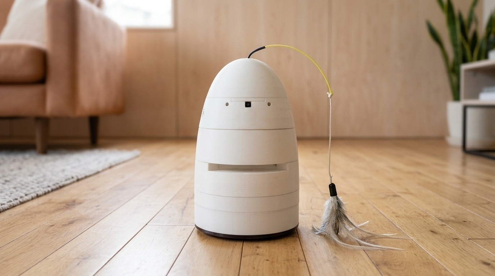
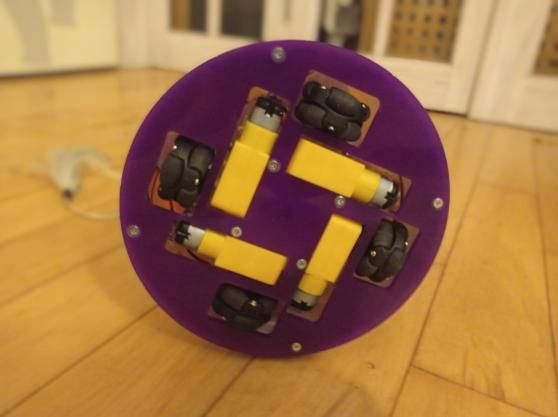
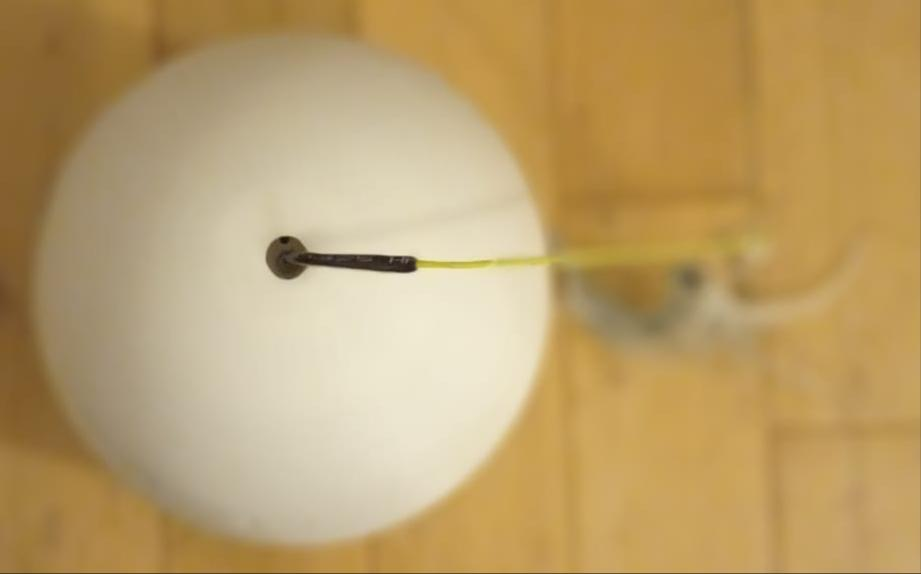
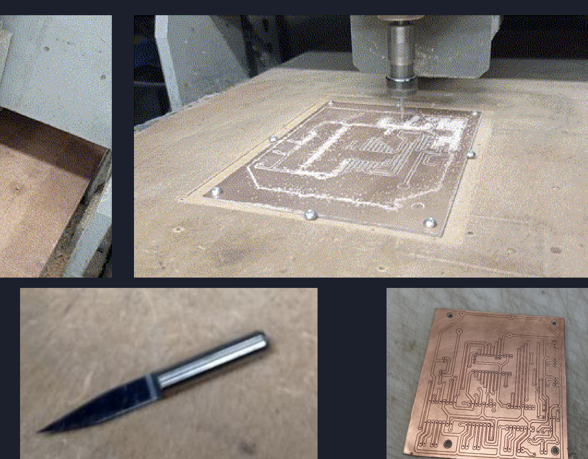
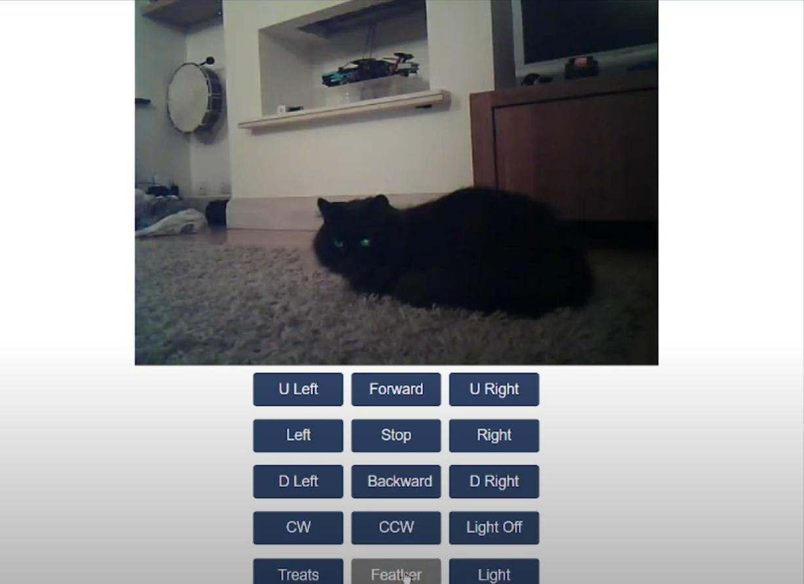
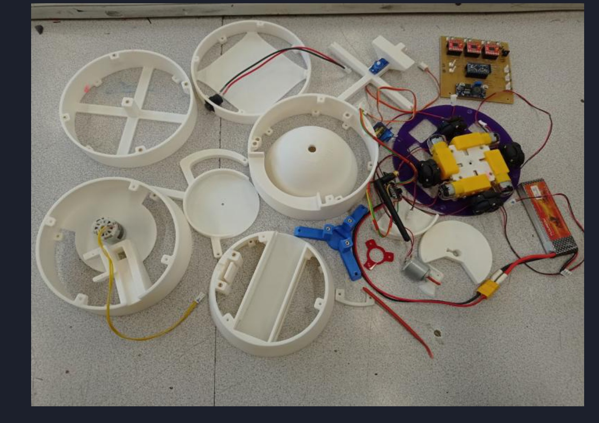
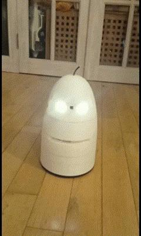
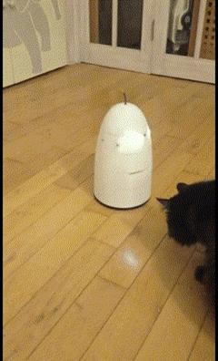

Design Brief & Mobile Robotics Objective
Commercial home pet cameras are static and unable to interact with pets moving through different rooms. Conventional 2-wheel differential drive robots struggle to navigate tight living room spaces and furniture without awkward turning arcs.
The goal was to design an agile, low-cost holonomic companion robot with zero-turning-radius omnidirectional translation, low-latency live video streaming over local Wi-Fi, custom integrated PCB electronics, and an active remote treat dispenser.
KEY CONSTRAINTS & TARGETS
- Holonomic Mobility: 4-wheel X-drive configuration using 45° offset omni wheels for instantaneous translation in any direction while rotating.
- Dual-Microcontroller Architecture: Dedicated ESP32 for camera encoding & web UI server; Arduino Pro Mini for real-time motor PWM kinematics.
- In-House PCB Manufacturing: Single/double-sided PCB routed on a desktop CNC mill with integrated H-bridge drivers and buck voltage regulation.
- Modular 3D-Printed Chassis: 6-layer PLA enclosure modeled in Autodesk Fusion with internal mounting brackets and battery access door.
Modular Assembly & Internal Mechanisms
Interactive 3D CAD assembly generated directly from the Autodesk Fusion STEP model. Drag to orbit and inspect the internal modular architecture. Use the Exploded Assembly slider to separate the 6 tiers (drive base, electronics bay, centrifugal treat launcher, battery & camera module, and top dome). You can toggle between Solid CAD, Wireframe, and X-Ray Ghost mode to view the internal mechanisms while assembled, or experiment with the interactive material & color palettes below.
Holonomic X-Drive & Kinematics

Inverse Kinematics of 4-Wheel X-Drive
The four 48mm rubber-roller omni wheels are arranged at 90° intervals (45° offset to chassis axes). The motor velocity vector equations for planar translation \((V_x, V_y)\) and rotation \(\omega\) are resolved in real-time on the Arduino microcontroller:
V_FR = (-V_x · sin(45°) + V_y · cos(45°) + ω · R)
V_BL = (V_x · sin(45°) - V_y · cos(45°) + ω · R)
V_BR = (-V_x · cos(45°) - V_y · sin(45°) + ω · R)
Centrifugal Treat Dispenser & Wand Teaser
Modeled a high-speed centrifugal treat launcher in Autodesk Fusion. A DC motor accelerates an internal slotted rotor, building centrifugal force to fling treats out through a servo-actuated door up to 2.5 meters. The top dome houses a motorized feather teaser driven by randomized trajectory code to simulate real prey.

In-House CNC PCB Fabrication & Wi-Fi Streaming

In-House PCB Manufacturing
Designed schematic and 2-layer PCB layout using EasyPC, then exported Gerber files to CopperCAM. Machined the board on a desktop CNC router using a 0.8mm drill and 30° V-engraving isolation bit, eliminating offshore lead times. Integrated TB6612FNG dual motor drivers, LM2596 buck converter, and transistor switching circuits.

Embedded Web Server & Video Stream
The ESP32-CAM hosts an HTTP server on local Wi-Fi, streaming 25 FPS JPEG video frames directly to any web browser. Touch buttons send instant AJAX commands over serial to the Arduino Pro Mini, providing 8-direction omnidirectional driving, treat firing, and teaser activation.
Modular Assembly & Real-World Testing



Key Engineering Takeaways & Iterations
The initial prototype attempted to execute HTTP video streaming, JPEG encoding, and 4-wheel PWM motor timers simultaneously on a single ESP32. Whenever Wi-Fi packets dropped, the CPU interrupt latency caused noticeable motor jitter and drift. Separating the tasks—dedicating an Arduino Pro Mini exclusively for motor inverse kinematics via high-frequency hardware timers while the ESP32 served purely as a video & command bridge—completely eliminated control latency and jitter.